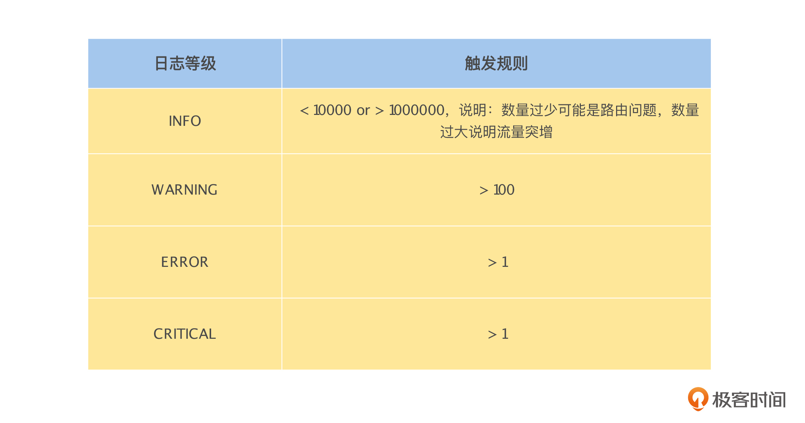
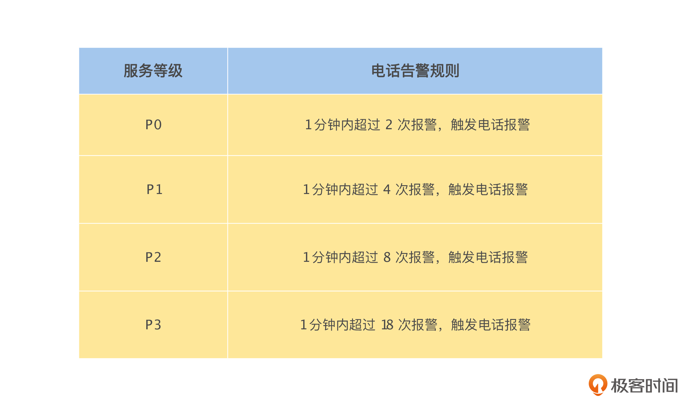

- 00 开篇词 掌握好学习路径，分布式系统原来如此简单.md
- 01 导读：以前因后果为脉络，串起网状知识体系.md
- 02 新的挑战：分布式系统是银弹吗？我看未必！.md
- 03 CAP 理论：分布式场景下我们真的只能三选二吗？.md
- 04 注册发现： AP 系统和 CP 系统哪个更合适？.md
- 05 负载均衡：从状态的角度重新思考负载均衡.md
- 06 配置中心：如何确保配置的强一致性呢？.md
- 07 分布式锁：所有的分布式锁都是错误的？.md
- 08 重试幂等：让程序 Exactly-once 很难吗？.md
- 09 雪崩（一）：熔断，让故障自适应地恢复.md
- 10 雪崩（二）：限流，抛弃超过设计容量的请求.md
- 11 雪崩（三）：降级，无奈的丢车保帅之举.md
- 12 雪崩（四）：扩容，没有用钱解决不了的问题.md
- 13 可观测性（一）：如何监控一个复杂的分布式系统？.md
- 14 可观测性（二）：如何设计一个高效的告警系统？.md
- 15 故障（一）：预案管理竟然能让被动故障自动恢复？.md
- 16 故障（二）：变更管理，解决主动故障的高效思维方式.md
- 17 分片（一）：如何选择最适合的水平分片方式？.md
- 18 分片（二）：垂直分片和混合分片的 trade-off.md
- 19 复制（一）：主从复制从副本的数据可以读吗？.md
- 20 复制（二）：多主复制的多主副本同时修改了怎么办？.md
- 21 复制（三）：最早的数据复制方式竟然是无主复制？.md
- 22 事务（一）：一致性，事务的集大成者.md
- 23 事务（二）：原子性，对应用层提供的完美抽象.md
- 24 事务（三）：隔离性，正确与性能之间权衡的艺术.md
- 25 事务（四）：持久性，吃一碗粉就付一碗粉的钱.md
- 26 一致性与共识（一）：数据一致性都有哪些级别？.md
- 27 一致性与共识（二）：它们是鸡生蛋还是蛋生鸡？.md
- 28 一致性与共识（三）：共识与事务之间道不明的关系.md
- 29 分布式计算技术的发展史：从单进程服务到 Service Mesh.md
- 30 分布式存储技术的发展史：从 ACID 到 NewSQL.md
- 春节加餐 技术债如房贷，是否借贷怎样取舍？.md
- 春节加餐 深入聊一聊计算机系统的时间.md
- 春节加餐 系统性思维，高效学习和工作的利器.md
- 结束语 在分布式技术的大潮流中自由冲浪吧！.md
14 可观测性（二）：如何设计一个高效的告警系统？
你好，我是陈现麟。
通过上节课的学习，我们掌握了在可观测性体系中，监控的位置和重要性，以及设计一个监控系统的基本原则，这样我们就可以为极客时间搭建一个可观测体系，并且设计一个简洁有效的监控系统了。
但是，只有监控还是不够的，因为我们不能一直盯着监控系统，所以需要通过一些规则，自动从监控的信息中发现问题，实时通知给负责的工程师，让工程师实时接入来处理。
那么解决这个问题的有效方法就是告警，你作为工程师，应该收到过各种各样的告警信息，并且及时解决了很多线上问题。但是，你也一定收到过很多无效的报警信息，这些信息浪费了我们的精力；有时线上故障真的发生了，反而会出现收不到告警信息的情况，导致我们错过了最佳的修复时间。
其实这是因为告警系统的设计不够高效，那么在本节课中，我们将一起来解决这个问题。我们会先讨论一个告警系统的评价指标，然后基于我的亲身经历，来讨论如何进行告警的治理，最后再来总结告警系统的设计经验。
告警系统的评价指标
告警系统的作用是把线上已经出现，或即将出现的故障及时通知给我们，所以一个理想的告警系统应该是不多报，不漏报，报对人。即所有的通知都是有效的，是需要立即处理的；所有的故障或即将出现的故障，都有告警通知；所有通知的接受对象，应该是处理这个问题的最佳人选。
从上面的讨论中，我们可以得出如下的三个指标，来评价一个告警系统。
- 信噪比：指有效告警通知数和无效告警通知数的比例，信噪比越高越好，是用来评估“多报”问题的。
- 覆盖率：指被告警系统通知的故障占全部线上故障的比例，同样，覆盖率也是越高越好，是用来评估“漏报”问题的。
- 转交率：指被转交的告警通知数占全部告警通知数的比例，转交率越低越好，是用来评估“对比人”问题的。
综上，依据这三个指标，我们能够评估一个告警系统的设计是否高效。
告警治理案例
关于如何告警治理，在我的工作中，有过一个非常有意思的经历，我在这里分享给你。
我们的告警系统会自动分析每个服务实例的日志，通过日志等级和数量自动生成告警通知，例如下表所示的规则。

案例背景
因为公司业务发展非常快，工程师的数量快速增长，所以业务需求也快速地迭代，我们都无暇对报警信息进行及时清理和处理。记得那时候，一天当中告警系统发出的告警通知有几千条，我们已经进入了恶性循环当中，告警通知越多，越不关注告警以及处理报警信息，导致告警通知变得更多了。
其实我们很清楚，这是一个非常不好的问题，整个告警系统的信噪比太低了，告警系统已经形同虚设，很容易因为漏过告警通知，而错过问题处理的最佳时间，导致更大的故障出现。于是，我们决定采取一些行动来解决这个问题。
首先，我们通过开会来强调这个问题，希望提高所有人的重视度，让工程师们及时处理告警通知，并且清理不需要的告警通知，提升系统的信噪比，使整件事情进入一个正循环。
在会后一段时间内情况有好转，但是后来又慢慢恢复到了之前的状态，其中一个主要原因是研发的工作比较忙碌。虽然所有人都明白清理好报警的长期受益，但是这个事情需要持续去优化才能显示出效果，我们坚持做几天问题不大，可是持续坚持就非常难了。这个现象在减肥、跑步、健身等场景里太司空见惯了，做一件事情很简单，但是长期坚持做一件简单的事情却非常难。
然后，我们开始思考既然开会不行，那么就通过统计数据，做一个服务的告警排名，并且每天都公开发布，让所有人了解自己负责服务的情况，基于排名开始竞争起来。 Leader 们也通过为告警少的服务点赞，推动告警多的服务做清理。刚刚开始实行时，效果很不错，但是不久后，所有人就很难坚持下去了，工程师们对告警排名麻木了，效果越来越差。
在上面的两个方法依然不见收效后，我们仔细分析了出现这个问题的原因。
- 通知机制太弱：当时的告警通知都发在一个群里面，然后 @ 相关的负责人，人们很容易忽略掉。其实当时也可以通过规则来设置电话报警，但是这个需要你主动来配置。
- 推动清理的粒度太大：不论是开会强调，还是告警排名，推动的频率都是以天来计算的，可是经过一天的时间，已经积累了很多告警，处理的压力增加，动力就会差很多。
解决方法
进一步找出问题后，我们对告警通知采取了下面的处理机制。
基于服务等级（服务等级在第 11 讲雪崩（三）中有详细介绍）对所有的告警通知，启用电话报警规则，并且严格执行，具体如下表所示。

我们这样设计的原因，主要建立在这两个认识上：
第一，相信工程师，并且让工程师自己负责起来。这里主要指的是，相信工程师对它负责的服务发出的告警通知都是有效的，并且他是有能力和义务来做好这一点的，所以，所有的告警通知都需要经过严格的电话告警规则来认真对待。
第二，通过分级机制来提高处理效率，避免频繁骚扰。虽然告警通知都是有效的，但是故障越大，告警通知就一定会越多。那么当频率非常低的时候，大概率是偶发性的问题，我们可以让告警信息进入工单，后续再处理，不需要立即打断工程师的工作。同时，利用服务等级信息来唯一确定电话告警的阈值，在工程师的工作效率和故障处理的实时性之间，找到一个平衡点。
在方案评估会议时，工程师们纷纷表示，如果电话报警太多，能不能自己来调整服务的电话报警阈值，我们给出的回复是不行的，具体的解释如下。
- 自定义阈值很容易出现阈值设置不合理的情况，导致覆盖率降低；同时自定义报警阈值会让工程师们，对于报警通知重要程度的理解不一致，增加沟通的成本。
- 如果一定要调整阈值，只能通过调整服务等级的形式来实现。但是如果调低服务等级，该服务在运维层面的资源保障也要跟着降低，我们主要通过这个机制来进行制衡，通过降低服务等级来提高报警阈值的问题。
- 电话报警多，说明需要清理服务告警的时候到了。
后来，这个告警方案实行的第一周，所有人确实都比较辛苦，报警电话很多，经常需要打断工作进行处理。但是 2 周后，电话报警就非常少了，我们开始进入了一个正常的状态，并且这个机制是持续、实时生效的，这样服务的告警问题就彻底解决了。
告警系统的设计经验
讨论完上面的告警系统治理案例，接下来我会结合工作中对告警系统的设计，分享如下的设计经验。
首先，对于告警系统，“相信工程师，并且责任到人”和“利用服务等级信息，来建立告警规则”，这两点在我们的案例中讨论得比较多，就不再赘述了。不过，这里要特别强调一点，服务的等级信息，是我们对分布式系统，或服务运维、治理中最重要的元数据，是其他系统可以依靠的、非常关键的一个分级依据。
其次，为了避免告警通知的单点问题，如果服务的负责人没有及时处理，我们就可以依照组织架构逐级上升。比较推荐的一个告警信息的处理流程是，负责人在收到告警的电话通知后，在告警信息的通知群里面，点击“正在处理”，这样该类型的告警会自动抑制一小段时间，避免告警信息的过度骚扰。
再次，告警规则应该简单易懂，工程师看到告警信息，就能知道触发的原因，告警规则的可解释性对于告警的处理非常重要。这一点 Google 也说明过，他们当前还没有使用基于 AI 的告警规则，就是为了确保告警规则的可解释性。
最后，比故障更严重的问题是告警缺失。告警缺失会使我们错过处理故障的最佳时机，导致故障被放大。总之，作为一个工程师，如果让用户来告诉你系统出现故障了，是一个非常羞愧的事情，所以我们一定要比用户先知道。
我们都明白，故障是无法 100% 避免的，但是告警却可以保证不缺失。因为告警是多层网状覆盖的，其中一个地方的故障，往往会导致多个层面出现报警信息，除非所有层面都告警缺失了，才会出现问题。
比如，一台机器突然崩溃了，虽然我们的系统可以自愈，但是在应用层面，当时正在调用这台机器上服务的调用方，会由于调用失败而告警；在机器层面，监控机器存活性的程序会告警。所以，在故障复盘中，如果故障发生时，告警缺失了，这就是一个必须严肃讨论的问题，我们需要思考，出现告警缺失的原因，以及还有没有类似的报警缺失。
对于告警缺失的问题，我们还需要注意一点，就是告警系统自身的问题，比如告警系统出现故障了怎么办，它的告警通知由谁来发送。我们可以考虑做一个独立的程序，来监控告警系统，并且，这个程序有独立发送告警信息的通道，通过这个独立的程序与告警系统，相互监控和告警来解决这个问题。
总结
在这节课中，我们总结出了告警系统的三个评价指标：信噪比、覆盖率和转交率，这样你就有了评估一个告警系统是否高效的依据，可以利用它来评估你现在使用的告警系统。
接着，我们通过一个告警治理的真实案例，了解了告警治理的难点，以及如何一步步分析、权衡，最后解决这个问题，你可以把这个案例作为对照，去思考你当前告警治理的情况。
最后，依据告警系统的设计经验，你在设计一个监控系统时，就能游刃有余，少走很多弯路了。
思考题
你是否遇到过告警通知的信噪比非常低的情况？后来解决了吗？如果解决了，是如何解决的呢？
欢迎你在留言区发表你的看法。如果这节课对你有帮助，也推荐你分享给更多的同事、朋友。
© 2019 - 2023 Liangliang Lee. Powered by gin and hexo-theme-book.